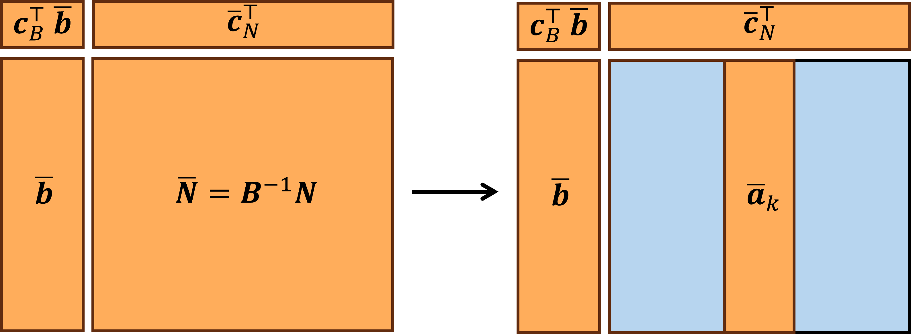
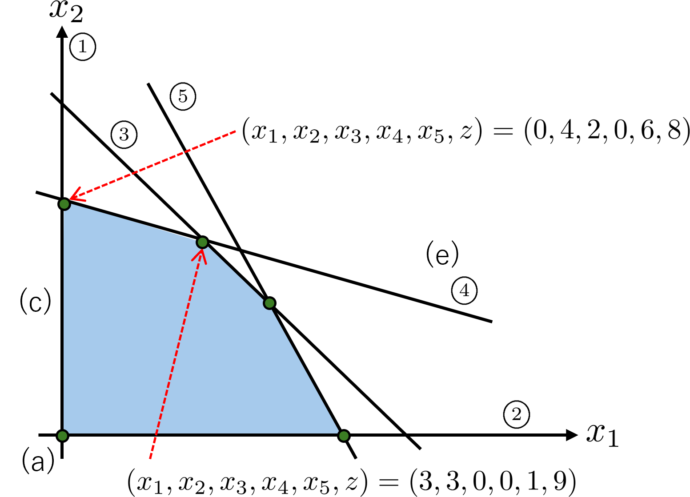
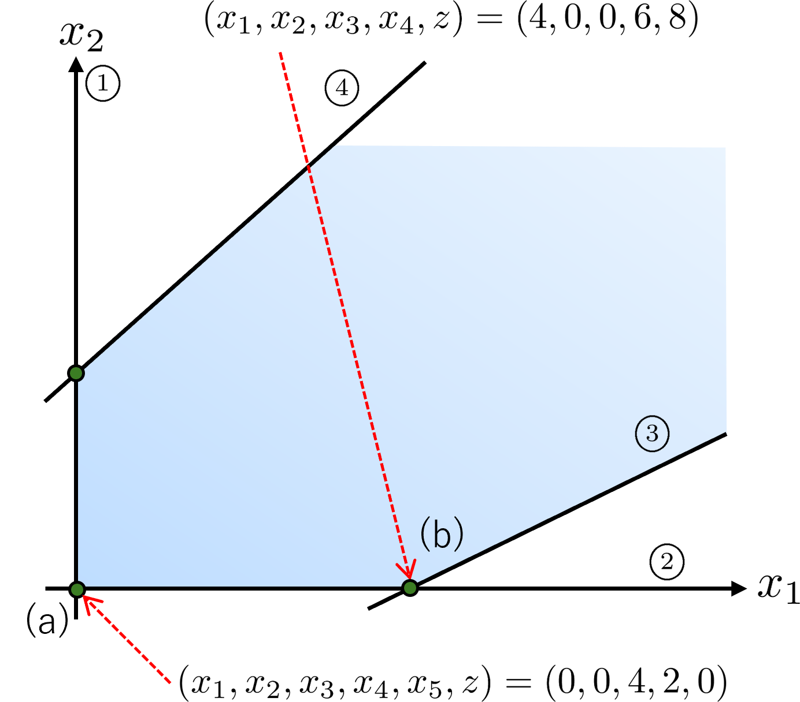
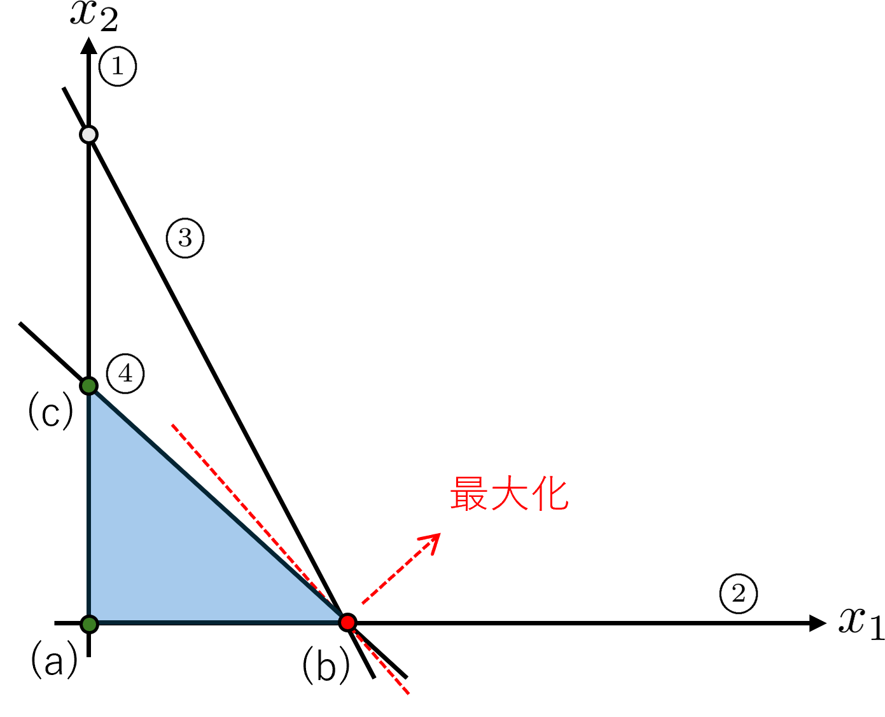
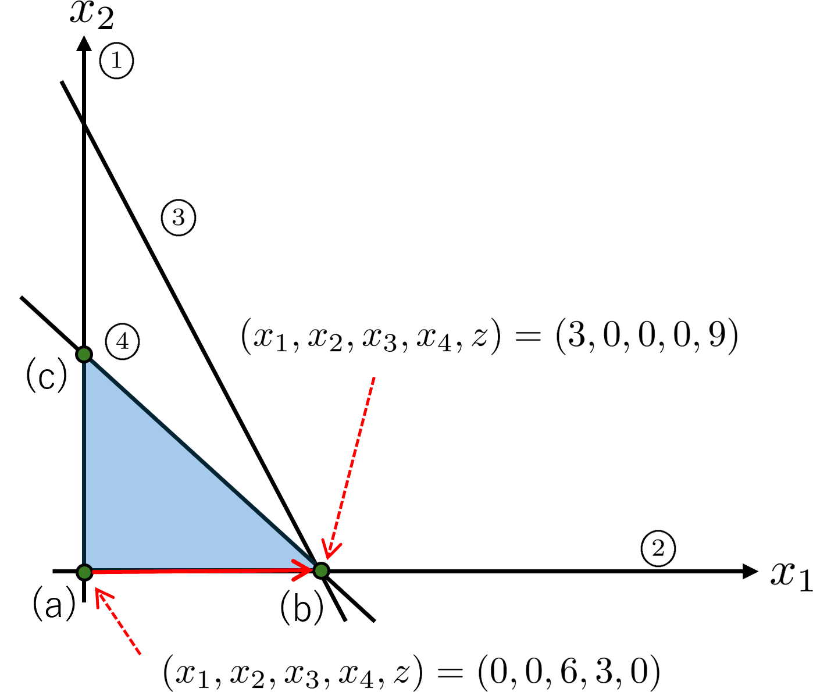
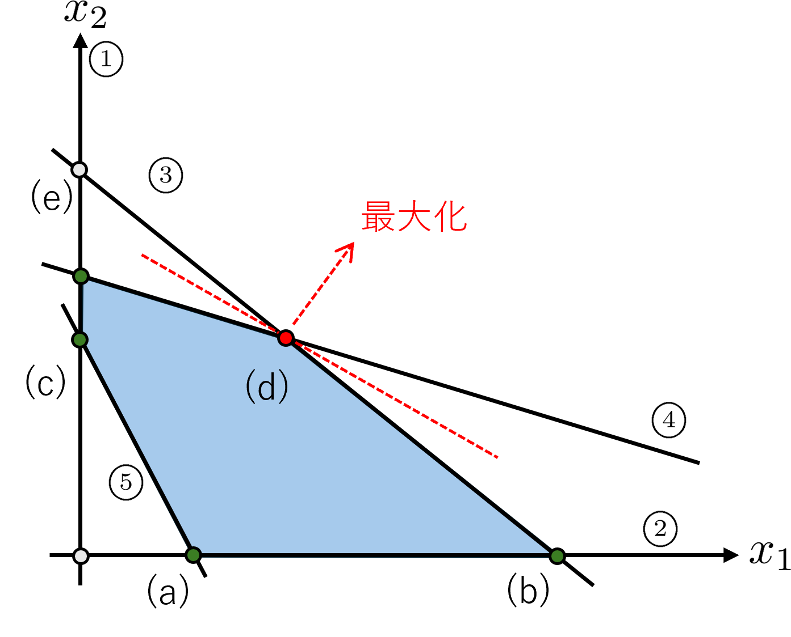
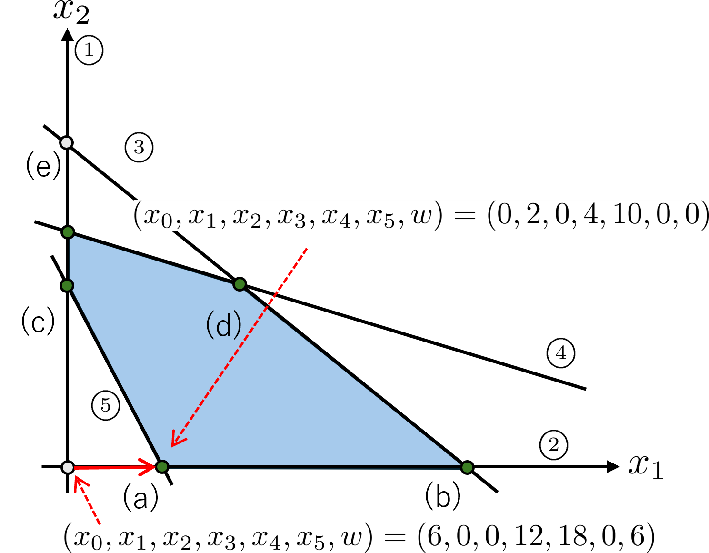

標準形の例 \[
\begin{aligned}
\text{最大化}\quad &x_1+2x_2\\
\text{条件}\quad &x_1\geq 0,\\
&x_2\geq 0,\\
&x_1+x_2\leq 6,\\
&x_1+3x_2\leq 12,\\
&2x_1+x_2\leq 10.
\end{aligned}
\] スラック変数を導入すると，等価な線形計画問題は \[
\begin{aligned}
\text{最大化}\quad &z=x_1+2x_2\\
\text{条件}\quad &x_1+x_2+x_3=6,\\
&x_1+3x_2+x_4=12,\\
&2x_1+x_2+x_5=10,\\
&x_1,x_2,x_3,x_4,x_5\geq 0.
\end{aligned}
\] となります．
単体法は，次のような辞書を用いて，基底解を更新していく方法でした．
\[
\begin{aligned}
z&=x_1+2x_2,\\
x_3&=6-x_1-x_2,\\
x_4&=12-x_1-3x_2,\\
x_5&=10-2x_1-x_2.
\end{aligned}
\]
このとき，右辺に現れる変数を非基底変数と呼び，基底解を決めるときに0に固定する変数です．一方で左辺に現れる変数は基底変数と呼び，それ以外の変数のことです．単体法の手順を簡単に説明します．
まず，初期実行可能基底解を得るために\(x_1=x_2=0\)とすると，\(x_3=6, x_4=12,
x_5=10,z=0\)が得られます．\(x_1,x_2\)の係数が正なので，まだ目的関数を大きくできる余地があります。
次に，基底変数と入れ替える非基底変数を選びます．今回は\(x_2\)を選んでみます．\(x_1=0\)はそのままなので，辞書は次のようになります．
\[
\begin{aligned}
z&=2x_2,\\
x_3&=6-x_2,\\
x_4&=12-3x_2,\\
x_5&=10-x_2.
\end{aligned}
\] このとき，非負制約条件により，\(x_2\)は最大で4までしか増やせません．そこで，\(x_2=4\)とすると同時に\(x_4=0\)となるので，\(x_4\)が非基底変数になります．よって辞書は次のようになります．
\[
\begin{aligned}
z&=8+\frac{1}{3}x_1-\frac{2}{3}x_4,\\
x_3&=2-\frac{2}{3}x_1+\frac{1}{3}x_4,\\
x_2&=4-\frac{1}{3}x_1-\frac{1}{3}x_4,\\
x_5&=6-\frac{5}{3}x_1+\frac{1}{3}x_4.
\end{aligned}
\] 同様に辞書の更新を繰り返すと，次のような辞書が得られます．
\[
\begin{aligned}
z&=9-\frac{1}{2}x_3-\frac{1}{2}x_4,\\
x_1&=3-\frac{3}{2}x_3+\frac{1}{2}x_4,\\
x_2&=3+\frac{1}{2}x_3-\frac{1}{2}x_4,\\
x_5&=1+\frac{1}{2}x_3-\frac{1}{2}x_4.
\end{aligned}
\] このときの非基底変数は\(x_3,
x_4\)で，基底変数は\(x_1, x_2,
x_5\)です．\(x_3,
x_4\)は非負の数であり，目的関数の係数が負であるため，これ以上\(z\)を大きくすることはできません．したがって，この辞書から得られる基底解\((x_1,x_2,x_3,x_4,x_5,z)=(3,3,0,0,1,9)\)は最適解です．

初期の実行可能基底解は
\[ (\boldsymbol{x}_B,\boldsymbol{x}_N)=(\boldsymbol{B}^{-1}\boldsymbol{b},\boldsymbol{0})=\left(\begin{bmatrix} 6&12&10 \end{bmatrix}^\top, \begin{bmatrix} 0&0 \end{bmatrix}^\top\right) \] であり， \[ \bar{\boldsymbol{b}}=\boldsymbol{B}^{-1}\boldsymbol{b}=\begin{bmatrix} 6 & 12 & 10 \end{bmatrix}^\top \]
となります．被約費用は
\[ \bar{\boldsymbol{c}}_N=\boldsymbol{c}_N-\bar{\boldsymbol{N}}^\top(\boldsymbol{B}^{-1})^\top \boldsymbol{c}_B=\begin{bmatrix} 1\\ 2 \end{bmatrix}-\begin{bmatrix} 1 & 1 & 2\\ 1 & 3 & 1 \end{bmatrix}^\top \begin{bmatrix} 1& 0 & 0\\ 0 & 1 & 0\\ 0 & 0 & 1 \end{bmatrix}^\top \begin{bmatrix} 0\\ 0\\ 0 \end{bmatrix}=\begin{bmatrix} 1\\ 2 \end{bmatrix} \] と計算できます．
最後にアルゴリズムをpythonで実装しました．こちらにリンクがあります．
class RevisedSimplex:
def __init__(self, A, b, c):
self.A = A
self.b = b
self.c = c
self.m, self.n = A.shape
self.B_idx = list(range(self.n - self.m, self.n))
self.N_idx = list(range(self.n - self.m))
def solve(self):
iteration = 0
while True:
# --- Step 1 ---
B = self.A[:, self.B_idx] #基底行列
N = self.A[:, self.N_idx] #非基底行列
B_inv = np.linalg.inv(B) #基底行列の逆行列
x_B = B_inv @ self.b #初期の実行可能基底解
b_bar = x_B
if np.any(b_bar < 0): # 実行可能かどうかのチェック
print("初期実行可能解を見つけられません")
return None, None, iteration
# --- Step 2 ---
c_B = self.c[self.B_idx]
c_N = self.c[self.N_idx]
c_bar = c_N - N.T @ B_inv.T @ c_B # 被約費用の計算
# --- Step 3 ---
if np.all(c_bar <= 0): #c_barが全て非正であれば最適解
x = np.zeros(self.n)
x[self.B_idx] = b_bar
return x, self.c @ x, iteration #最適解と最適値と反復回数を返して終了
# c_barの中で最大のものを選び，対応する非基底変数を基底に入れる（最大係数規則）
k = np.argmax(c_bar)
entering = self.N_idx[k]
# --- Step 4 ---
a_k = self.A[:, entering]
a_bar = B_inv @ a_k #N_barの非基底変数に対応する列ベクトル
if np.all(a_bar <= 0):
print("非有界です。")
return None, np.inf, iteration #非有界なので終了
# --- Step 5 ---
theta = []
for i in range(self.m):
if a_bar[i] > 0:
theta.append(b_bar[i] / a_bar[i])
else:
theta.append(np.inf)
i_star = np.argmin(theta)
leaving = self.B_idx[i_star]
# 基底更新
self.B_idx[i_star] = entering
self.N_idx[k] = leaving
iteration += 1
if iteration > 10000:
print("反復回数が上限に達しました。")
return None, None, iteration例題
A = np.array([
[1, 1, 1, 0, 0],
[1, 3, 0, 1, 0],
[2, 1, 0, 0, 1]])
b = np.array([6, 12, 10])
c = np.array([1, 2, 0, 0, 0])
これを解くと，
x* = [3. 3. 0. 0. 1.]
optimal value = 9.0
iteration = 2
A = np.array([
[1, -2, 1, 0],
[-1, 1, 0, 1]])
b = np.array([4, 2])
c = np.array([2, 1, 0, 0])を解くと，
x* = None
optimal value = None
iteration = 1と出力され，これは非有界であることを示しており，図とも一致しています．
先ほどのアルゴリズムでは，\(\bar{c_k} >
0\)である非基底変数\(x_k\)を1つ選ぶと説明しましたが，条件を満たす非基底変数が複数あることがあります．これまでの例では，被約費用\(\bar{c}_k\)が最大になる非基底変数を選んでいました．この規則を最大係数規則と呼びます．
実は，最大係数規則を用いると単体法が無限ループに陥って最適解にたどり着かないことがあります．以下の例を考えます．
\[
\begin{aligned}
\text{最大化}\quad &3x_1+2x_2\\
\text{条件}\quad &x_1\geq 0,&\rightarrow ①\\
&x_2\geq 0,&\rightarrow ②\\
&2x_1 + x_2 \leq 6,&\rightarrow ③\\
&x_1 +x_2 \leq 3,&\rightarrow ④
\end{aligned}
\]


非基底変数に入れ替える変数は\(x_3,
x_4\)があり，例えば\(x_3\)を選ぶと，以下の辞書が得られます．
\[
\begin{aligned}
z&=9+\frac{1}{2}x_2-\frac{3}{2}x_3,\\
x_1&=3-\frac{1}{2}x_2+\frac{1}{2}x_3,\\
x_4&=0-\frac{1}{2}x_2+\frac{1}{2}x_3.
\end{aligned}
\] \(x_2\)を増やせば目的関数を改善できるので，\(x_3=0\)と固定すると \[
\begin{aligned}
z&=9+\frac{1}{2}x_2,\\
x_1&=3-\frac{1}{2}x_2,\\
x_4&=0-\frac{1}{2}x_2.
\end{aligned}
\] となります．しかし，\(x_2\)は0から増やせません．そこで，\(x_2=0\)とすると同時に\(x_4=0\)となることから，非基底変数\(x_4\)を選びます．すると，以下の辞書が得られます．
\[
\begin{aligned}
z&=9-x_3-x_4,\\
x_1&=3-x_3+x_4,\\
x_2&=0+x_3-2x_4.
\end{aligned}
\]
基底変数の係数がすべて負なのでここで終了です．上図から分かるように頂点\((b)\)にとどまり続けていることが分かります．
今回の例では終了しましたが，このように退化が生じると，実行可能領域の頂点に留まったまま基底変数と非基底変数の入れ替えを繰り返して，再び同じ基底変数と非基底変数の組み合わせに戻ってくることがあります．このような現象を巡回と呼びます．
（余談ですが）巡回が起きるこのような問題が知られています． \[
\begin{aligned}
\text{最大化}\quad &10x_1-57x_2-9x_3-24x_4\\
\text{条件}\quad &0.5x_1-5.5x_2-2.5x_3-9x_4 \leq 0,\\
&0.5x_1-1.5x_2-0.5x_3-x_4 \leq 0,\\
&x_1 \leq 1, \\
&x_1,x_2,x_3,x_4\geq 0
\end{aligned}
\]
一万回辞書の更新を繰り返しても最適解にたどり着かないことが確認できます．
このような巡回に対処するために，\(\frac{\bar{b}_i}{\bar{a_{ik}}}=\theta\)を満たす基底変数が複数存在するとき，添字が最小の基底変数\(x_i\)を選ぶ最小添字規則(またはブランドの規則)がよく知られています．
（余談）多くの問題では，単体法はすべての頂点を調べることなく終わりますが，クレーとミンティは原点から単体法を開始すると，最適解が得られるまでに凸多面体の全ての頂点をめぐり，\(2^n-1\)回の反復が必要な問題を作りました．google
colab
\[ \begin{aligned} \text{最大化}\quad &\sum_{j=1}^n 10^{n-j}x_j\\ \text{条件}\quad &2\sum_{j=1}^{i-1} 10^{i-j-1}x_j + x_i \leq 10^{i-1},&i=1,2,\ldots,n,\\ &x_j\geq 0.&j=1,2,\ldots,n \end{aligned} \]

さらに，スラック変数\(x_3, x_4, x_5\)を導入し，辞書を作ると，
\[
\begin{aligned}
z&=x_1+2x_2,\\
x_3&=6-x_1-x_2,\\
x_4&=12-x_1-3x_2,\\
x_5&=-6+3x_1+2x_2
\end{aligned}
\] となります．これまでと同じように\(x_1=x_2=0\)としたいところですが，このとき\(x_5=-6\)となり，実行可能基底解が得られません．そこで，最適化の前に実行可能基底解を1つ求める補助問題を作成します．変数\(x_0\)を導入して，以下の問題を考えます．
\[
\begin{aligned}
\text{最小化}\quad &x_0\\
\text{条件}\quad &x_1+x_2-x_0\leq 6,\\
&x_1+3x_2-x_0\leq 12,\\
&3x_1+2x_2-x_0\leq -6,\\
&x_1,x_2,x_0\geq 0
\end{aligned}
\] この\(x_0\)を人工変数と呼びます．非負の値\(x_0\)を入れて不等式をそのままにするために，\(-x_0\)としています．もしもこの補助問題の最適値が0であれば，もとの問題には実行可能解が存在し，最適値が正であれば，もとの問題には実行可能解が存在しないことになります．
この問題にスラック変数\(x_3, x_4,
x_5\)と目的関数\(w\)を導入して辞書を作ると， \[
\begin{aligned}
w&=x_0,\\
x_3&=6-x_1-x_2+x_0,\\
x_4&=12-x_1-3x_2+x_0,\\
x_5&=6-3x_1-2x_2+x_0.
\end{aligned}
\] となります．非負制約を違反していた\(x_5\)を\(0\)にしたいので，\(x_5\)を非基底変数に，\(x_0\)を基底変数に入れ替えると， \[
\begin{aligned}
w&=6-3x_1-2x_2+x_5,\\
x_3&=12-4x_1-3x_2+x_5,\\
x_4&=18-4x_1-5x_2+x_5,\\
x_0&=6-3x_1-2x_2+x_5.
\end{aligned}
\] となります．目的関数の\(x_1,
x_2\)の係数がともに負なので，\(w\)を改善できます．（補助問題は最小化問題なので）最大係数規則を採用して\(x_2=x_5=0\)と固定して\(x_1\)を増やします．すると，\(x_1=2\)と同時に\(x_0=0\)となります．よって，\(x_1\)と\(x_0\)を入れ替えると， \[
\begin{aligned}
w&=x_0\\
x_3&=4+\frac{4}{3}x_0-\frac{1}{3}x_2-\frac{1}{3}x_5,\\
x_4&=10+\frac{4}{3}x_0-\frac{7}{3}x_2-\frac{1}{3}x_5\\
x_1&=2-\frac{1}{3}x_0-\frac{2}{3}x_2+\frac{1}{3}x_5.
\end{aligned}
\] となります．このとき，\(w=x_0=0\)が最適値であることが分かり，下図の原点から点\((a)\)へ移動します．

\(x_0\)の役目は終わったので，もとの問題に戻ります．辞書は，
\[
\begin{aligned}
z&=2+\frac{4}{3}x_2+\frac{1}{3}x_5,\\
x_3&=4-\frac{1}{3}x_2-\frac{1}{3}x_5,\\
x_4&=10-\frac{7}{3}x_2-\frac{1}{3}x_5,\\
x_1&=2-\frac{2}{3}x_2+\frac{1}{3}x_5.
\end{aligned}
\] となり，\(x_2=x_5=0\)とすれば，初期の実行可能基底解が得られ，あとは単体法を適用すればよいことになります．このように，第1段階で実行可能解を1つ求める補助問題を解き，見つかれば第2段階で元の問題を解く，そうでなければ実行不可能と判断して終了するアルゴリズムを2段階単体法と呼びます．
以上の内容を一般化します．標準形の線形計画問題 \[
\begin{aligned}
\text{最大化}\quad &\sum_{j=1}^n c_j x_j\\
\text{条件}\quad &\sum_{j=1}^n a_{ij}x_j\leq
b_i,&i=1,2,\ldots,m,\\
&x_j\geq 0,&j=1,2,\ldots,n.
\end{aligned}
\] が与えられたとき，辞書は \[
\begin{aligned}
z&=\sum_{j=1}^n c_j x_j,\\
x_{n+i}&=b_i-\sum_{j=1}^n a_{ij}x_j,&i=1,2,\ldots,m
\end{aligned}
\]
となります．非負制約により，辞書が実行可能であるための必要十分条件は，\(b_i\geq 0(\forall
i,i=1,2,\ldots,m)\)であり，\(\boldsymbol{x}=\boldsymbol{0}\)が実行可能基底解であることと等価です．
そこで，\(b_i<0\)となる制約条件が存在する問題では原点ではない実行可能基底解を
1つ求める以下に示す補助問題を作成します． \[
\begin{aligned}
\text{最小化}\quad &x_0\\
\text{条件}\quad &\sum_{j=1}^n a_{ij}x_j-x_0\leq
b_i,&i=1,2,\ldots,m,\\
&x_j\geq 0,&j=1,2,\ldots,n.\\
\end{aligned}
\] ここでスラック変数\(x_{n+1}, \ldots,
x_{n+m}\)と目的関数\(w\)を導入して辞書を作ると， \[
\begin{aligned}
w&=x_0,\\
x_{n+i}&=b_i-\sum_{j=1}^n a_{ij}x_j+x_0,&i=1,2,\ldots,m
\end{aligned}
\] となります．\(b_i\)の最小値を\(b_k(<0)\)とすると，対応する基底変数\(x_{n+k}\)を非基底変数に，人工変数\(x_0\)を基底変数に入れ替えると， \[
\begin{aligned}
w&=-b_k+\sum_{j=1}^n a_{kj}x_j+x_{n+k},\\
x_0&=-b_k+\sum_{j=1}^n a_{kj}x_j+x_{n+k},\\
x_{n+i}&=(b_i-b_k)-\sum_{j=1}^n
(a_{ij}-a_{kj})x_j+x_{n+k},&i\neq k.
\end{aligned}
\] となります．このとき，\(x_0=-b_k>0,x_{n+k}=0\)となります．その他の基底変数も\(x_{n+i}=b_i-b_k>0\)となり，実行可能な辞書が得られます．